AI Academy · Level 4 · Grade 9 · Week 25 · Student lesson
Metrics Match Consequences
Learn to understand, design, build, test and explain AI systems responsibly.
Project: Responsible Plant Classifier
Before you start
Week 17: precision and recall use different denominators.
Plan time to read, investigate and explain. Keep predictions separate from observations.
Student lesson · 1 of 17
Your mission
Your learning target
I can apply a declared score threshold including equality.
I can compare false alarms and misses at two thresholds.
I can separate validation choices from final testing.
Remember before reading
Close your notes first. A rough first answer helps us choose the right starting point; it is not a score for your ability.
Without opening the old lesson, explain one key idea from Train, Validation, Test. Give an example and a mistake that the idea helps you avoid.
Without opening the old lesson, explain one key idea from Train a Regression Model. Give an example and a mistake that the idea helps you avoid.
Without opening the old lesson, explain one key idea from Regression and Residuals. Give an example and a mistake that the idea helps you avoid.
After trying, check the relevant lesson or ask your teacher. Change the part of your explanation that the evidence shows was wrong.
Metric choice depends on intended use, the positive class, who is affected, and the consequences of each error.
Builder name and experiment date:
Readiness for the connected explanation
Which denominator defines recall?
This week’s end goal
By the end, I can explain metrics match consequences using a traced example and a stated limitation.
Student lesson · 2 of 17
Notice the evidence
PICTURE ENTRY
Notice → Predict → Explain
Begin with visible evidence; do not explain more than the picture and information support.
Name three visible details without interpreting them.
Predict the data, model, or evaluation decision being made.
Identify one hidden assumption that could change the result.
State what evidence would confirm or reject your prediction.
My prediction and supporting evidence:
A closer explanation
A classifier score is not automatically a probability. Declare blocked positive and predict blocked when score is at least the threshold. Changing this boundary changes decisions without necessarily retraining the model. Select it using development evidence and a task-relevant rule, not final-test answers.
Use fictional classroom data throughout this investigation. Keep the task, units, reference labels and data split visible as you reason. Earlier weeks supplied the model-building process; this week examines thresholds and consequences.
Student lesson · 3 of 17
See how it works
ML MECHANISM
Input → Model → Evidence
Trace the information, fitted behavior, and evaluation proof separately.
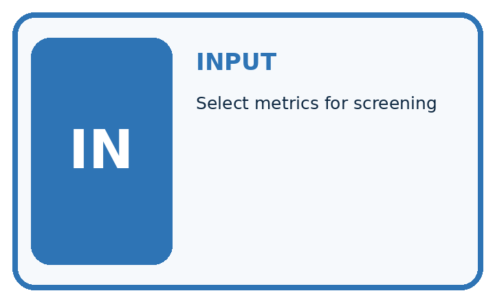
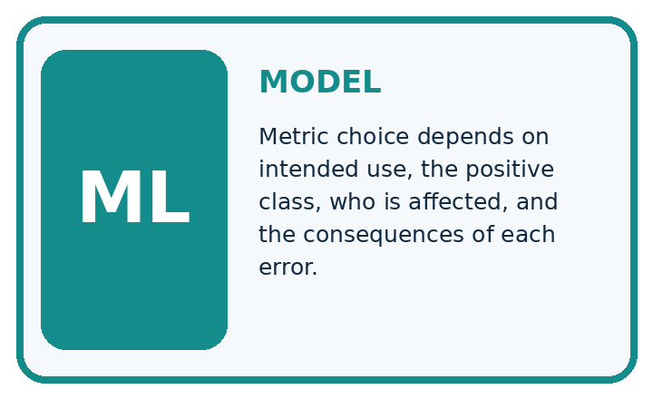
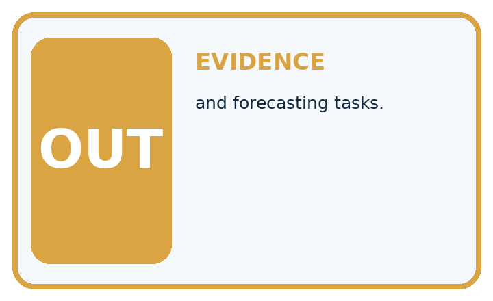
QUESTION Select metrics for screening, recommendation, and forecasting tasks.
MODEL IDEA Metric choice depends on intended use, the positive class, who is affected, and the consequences of each error.
PROOF NEEDED Use an unseen case, visible calculation, error analysis, and a stated limitation.
Draw a fresh data → model → prediction → evaluation trace:
A closer explanation
Six records have score/reference pairs A .9/blocked, B .7/clear, C .6/blocked, D .4/blocked, E .3/clear, F .1/clear. At threshold .5, TP=2, FP=1, FN=1, TN=2. At .3, TP=3, FP=2, FN=0, TN=1. Equality is positive, so E is flagged at .3.
scores = [0.9, 0.7, 0.6, 0.4, 0.3, 0.1]
actual = [True, False, True, True, False, False]
for threshold in [0.5, 0.3]:
predicted = [s >= threshold for s in scores]
fp = sum(p and not a for p, a in zip(predicted, actual))
fn = sum(not p and a for p, a in zip(predicted, actual))
print(threshold, fp, fn, fp + 4 * fn)
# Output rows: 0.5 1 1 5, then 0.3 2 0 2.Trace the calculation on paper before running this optional Python check. Use the stated fictional inputs and compare intermediate values. The code checks this example; your independent workbook case uses different evidence.
Connect the picture and the explanation
Point to the input, the deciding step and the result in this week’s visual. Explain the same step in ordinary words. A picture helps when you can say what each part represents.
Student lesson · 4 of 17
Compare the cases
EVALUATION DESIGN
Four Tests, Four Kinds of Evidence
A system is not understood until it survives more than one comfortable example.


NORMAL Expected data and expected behavior.
BOUNDARY Value close to a threshold, ambiguous label, or uncertain prediction.
MISSING Necessary field, label, source, or measurement is unavailable.
SHIFTED New lighting, species, device, subgroup, or time condition.
Which case most threatens today's claim, and why?
Change one thing in the pictured case
Change: Miss and false-alarm costs swap to1 and 5.
Prediction: Threshold0.7 costs1 while0.4 costs5; preferred threshold switches.
Reason: Metric choice encodes the declared consequences, not a universal best threshold.
Student lesson · 5 of 17
Words that unlock the idea
VOCABULARY
Words You Can Calculate and Defend
A definition matters when it lets you interpret a new dataset, model, or result.
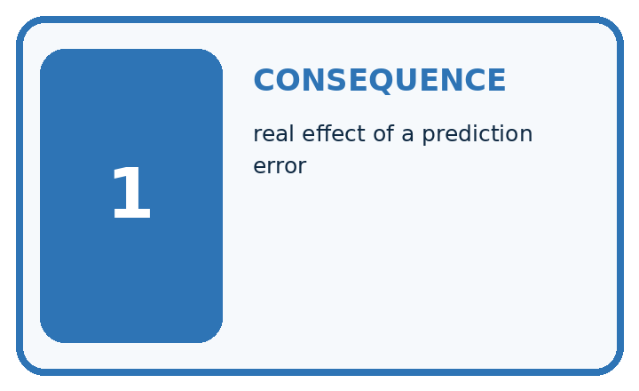
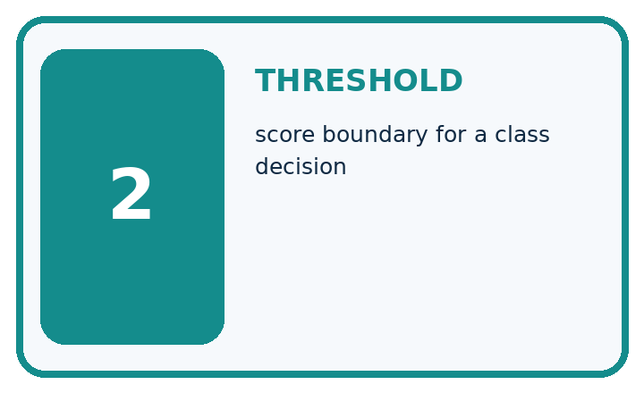
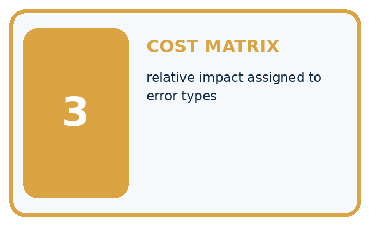
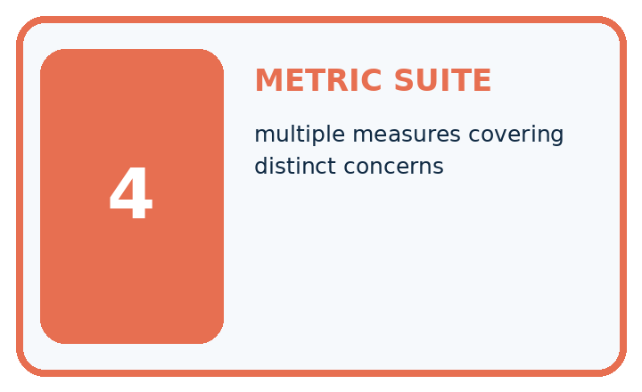
| Term | Precise meaning | My ML example |
|---|---|---|
| consequence | real effect of a prediction error | |
| threshold | score boundary for a class decision | |
| cost matrix | relative impact assigned to error types | |
| metric suite | multiple measures covering distinct concerns |
Repair the claim using a definition, calculation, or test record:
Words used in the closer explanation
| Word | Meaning |
|---|---|
| Score | A model output used to rank or decide |
| Threshold | A boundary that converts a score to a label |
| False alarm | A positive prediction for a negative reference |
| Cost rule | A declared way to value different mistakes |
Student lesson · 6 of 17
Follow a worked example
WORKED EVIDENCE
Reason Step by Step
Predict first. Then check each step. A correct answer without visible evidence cannot be audited.
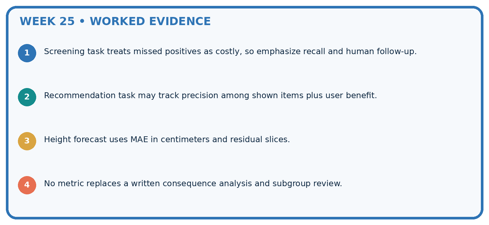
STEP 1 Screening task treats missed positives as costly, so emphasize recall and human follow-up.
STEP 2 Recommendation task may track precision among shown items plus user benefit.
STEP 3 Height forecast uses MAE in centimeters and residual slices.
STEP 4 No metric replaces a written consequence analysis and subgroup review.
Recalculate, retrace, or restate the evidence independently:
A closer explanation
Thresholds and consequences at a glance
Learn from the worked case
Cover the result before checking it. Say what is given, choose the procedure, and follow one step at a time. Then uncover the result and explain your first mismatch. Ask why a step is allowed, not only what number it produces.
A pictorial worked case: Metrics Match Consequences
Translate a threshold choice into missed-leaf and false-alarm costs.
The facts we will use
Scores/reference: 0.9 spotted, 0.6 healthy, 0.4 spotted, 0.1 healthy. Predict spotted at score>=threshold. Miss cost5; false-alarm cost1.
All inputs and outcomes in this worked example are invented classroom data; no real model run is claimed.
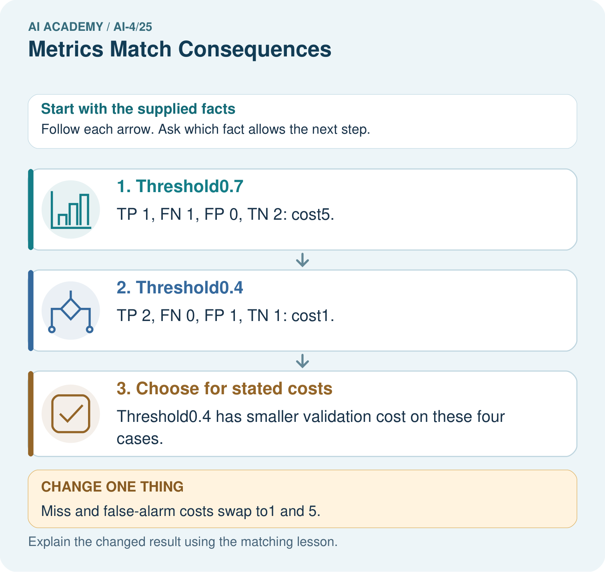
Read the picture one step at a time
Why this result follows
Read the picture in order. Threshold0.4 has smaller validation cost on these four cases. The arrows show which recorded input or intermediate result each decision uses. Explain the deciding step aloud before checking the changed case; pointing to the final answer alone does not show how it follows.
What this example does not establish
Toy costs illustrate decision design; real use needs agreed consequences, review capacity and fresh evaluation.
Read the labelled picture: Which labels determine the false-alarm count at threshold 0.4? Point to the relevant step in the picture, then write the changed result and the rule or evidence that supports it.
Change one thing: Miss and false-alarm costs swap to1 and 5. Predict the result before checking the explanation. What remains the same?
Student lesson · 7 of 17
Find and repair a mistake
ERROR DETECTIVE
Compare → Diagnose → Repair
Do not patch the answer. Find the earliest unsupported assumption, data problem, or experiment error.
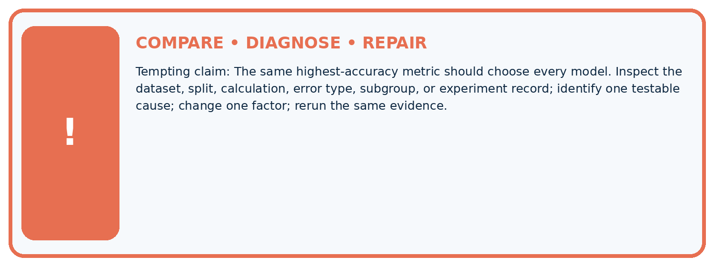
| Evidence record | Expected | Actual | Likely cause / next test |
|---|---|---|---|
| normal case | passes | ||
| boundary case | defined behavior | ||
| missing case | safe fallback | ||
| shifted case | measured limit |
Diagnose one cause and name the cleanest next experiment:
A closer explanation
These invented costs support arithmetic practice, not real robot deployment. Stakeholders must justify actual consequences. Record every tried threshold and retain a separate final test; a threshold is part of the selected method.
Student lesson · 8 of 17
Practise together
ML STUDIO
Specify Before You Run
A trustworthy result can be reproduced from the recorded data, code, settings, and evaluation rule.

Experiment record
QUESTION + intended use + success threshold
DATA version + grouped split + leakage check
CODE/preprocessing + features + model + settings + seed
METRICS + positive class + units + denominators
PREDICTIONS + errors + subgroup slices + limitations
HUMAN reviewer + release, revise, limit, or stop decision
Write the minimum record needed to reproduce today's result:
A closer explanation
Suppose the classroom cost is one point per false alarm and four per miss. Total costs are 5 at .5 and 2 at .3, so .3 wins among these two candidates under this rule. If false alarms cost four and misses cost one, costs are 5 and 8, reversing the choice.
Practise with less help: Count the consequences
Use workbook W2 for the connected example “Thresholds and consequences”. First fill the input and rule boxes. Try the middle steps before asking for a hint. After a hint, try the next step yourself.
| Plan | Do | Check |
|---|---|---|
| What is given? Which rule or procedure applies? | Record each intermediate step. | Does the result follow? What remains unknown? |
Explain your trace to a partner. Your partner points to one step to check. Swap roles on the next case. Each person writes their own explanation.
Check your reasoning
Use the worked case for Thresholds and consequences. Proposed explanation: “A final answer is enough”. Decide whether this explanation is supported. Point to the step or supplied fact that decides; explain your repair if needed.
Answer on your own before discussion. If you are unsure, say which step you need help with.
Explain the picture
Which labels determine the false-alarm count at threshold 0.4? Point to the relevant step in the picture, then write the changed result and the rule or evidence that supports it.
This is supported practice. Keep the separately named independent case for an attempt before feedback.
Student lesson · 9 of 17
Run the investigation
EVIDENCE LAB
Predict → Run → Calculate → Interpret
Keep the test conditions fixed, record every result, and change only one planned factor.
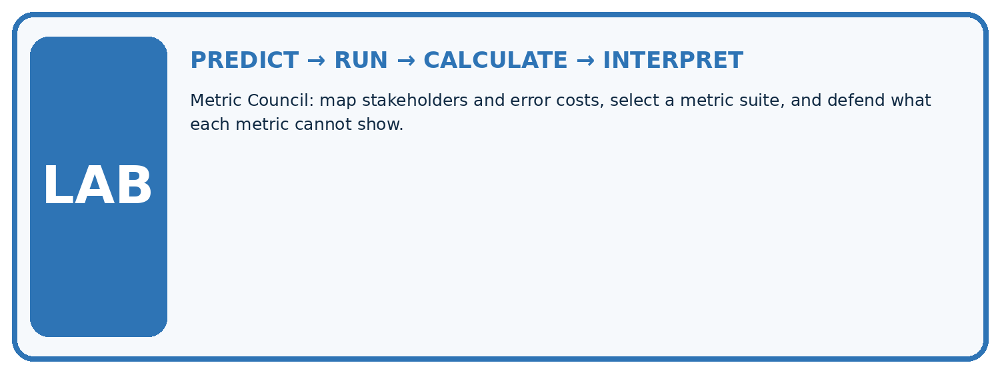
1. Write the hypothesis and expected evidence before running.
2. Metric Council: map stakeholders and error costs, select a metric suite, and defend what each metric cannot show.
3. Run one normal, one boundary, one missing, and one shifted case.
4. Calculate the metric from raw counts or row-level errors.
5. Interpret what changed, what did not, and what remains unsafe or unknown.
| Case | Prediction | Actual | Calculation / evidence | Meaning / next test |
|---|---|---|---|---|
| Normal | ||||
| Boundary | ||||
| Missing | ||||
| Shifted |
Plan → try → check
Before trying: what do I expect, and why? While trying: which step could first go wrong? Afterwards: what did I actually observe, and what should change? Keep “not run” if you only traced the procedure.
Student lesson · 10 of 17
Build your understanding
MASTERY
From Knowing the Word to Owning the Idea
Move upward only when you can produce evidence without copying the example.

DEFINE Use all four terms precisely: consequence, threshold, cost matrix, metric suite.
CALCULATE Reproduce the worked evidence with units and denominator.
TRACE Explain the data, code or decision path.
DIAGNOSE The same highest-accuracy metric should choose every model.
TRANSFER Solve a fresh dataset or model case.
IMPROVE Change one cause and rerun fixed evidence.
DEFEND State intended use, metric, limitation, and human responsibility.
Student lesson · 11 of 17
Connect your project
CUMULATIVE PROJECT
Responsible Plant Classifier
Every week adds one reviewable artifact to the same evidence-based capstone.
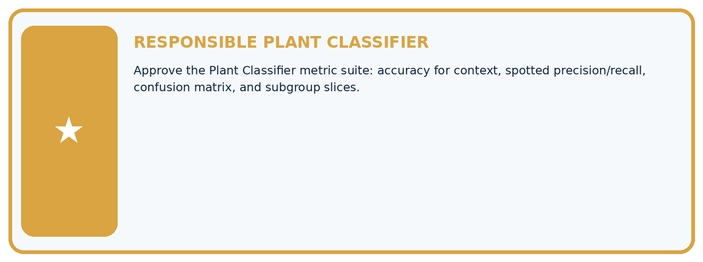
Which requirement or risk does this artifact address?
Which dataset, split, code, and metric version does it use?
What normal and shifted cases were tested?
What remains uncertain or weak?
What decision still belongs to a teacher or qualified human?
My evidence-linked project decision:
Evidence for your project
For your Responsible Plant Classifier, save the input, procedure, observed result and limitation of this check. Label this worked example as practice; use a different, previously unreviewed case when checking independent understanding.
Student lesson · 12 of 17
Show what you know
INDEPENDENT PROOF
Explain • Calculate • Transfer • Defend
Complete this with a fresh case after guided practice and compare it with the mastery criteria.
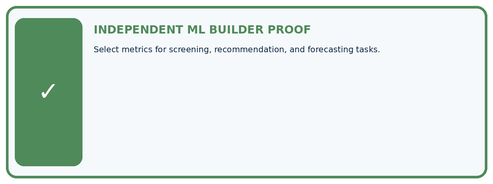
□ Define the task, feature/target roles, and intended-use boundary.
□ Show the calculation, code trace, or experiment record.
□ Test a normal case and one revealing boundary, missing, or shifted case.
□ Diagnose one failure without changing several factors at once.
□ Name a limitation, fairness concern, and the human-review action.
Independent evidence and defense:
My level: □ Not yet □ With one hint □ Independently □ I can teach and defend it
Student lesson · 13 of 17
Study a complete case
Week 25 Worked case
Use the supplied details to practise the weekly concept before attempting the independent question. This case extends the illustrated lesson.
The situation
Spotting alerts can miss disease signs or create unnecessary healthy-leaf reviews.
The question
Connect metrics to consequences.
Worked explanation
Recall measures finding positives; precision measures alert correctness. Set tradeoffs using consequences, review capacity and validation evidence.
Explain it in your own words
Which detail supports the answer, and why does it matter?
Trace the supplied case visually
Connect error types to consequences
| Evidence or stage | Value or result |
|---|---|
| False negative | Spotted leaf missed |
| False positive | Healthy leaf creates an alert |
| Recall | Fraction of positives found |
| Precision | Fraction of alerts correct |
Spotting alerts can miss disease signs or create unnecessary healthy-leaf reviews.
Connect metrics to consequences.
Recall measures finding positives; precision measures alert correctness. Set tradeoffs using consequences, review capacity and validation evidence.
Student lesson · 14 of 17
Try a new case independently
Independent case: Apply independently
Scores/references are .8/blocked,.5/clear,.2/blocked,.1/clear. Compare thresholds .5 and .2 using the same cost.
Attempt this case before feedback. Record any help. Earlier examples below are further practice; a case already practised with feedback cannot establish fresh transfer.
Week 25 Independent application
Close the worked explanation. Apply the idea to this different question without copying.
Missing a diseased plant is considered more costly than a false alarm, but staff can review only ten alerts daily. Which evaluation trade-off should be discussed?
My answer, with a trace, calculation or supporting evidence
Create and test
Change one relevant detail. Predict the result before testing. Include a boundary or missing-information case when it helps reveal a limit.
My changed input and expected result
Connect to your project
Approve the Plant Classifier metric suite: accuracy for context, spotted precision/recall, confusion matrix, and subgroup slices.
The evidence I will keep
Your teacher has the independent answer and scoring criteria. Complete the matching workbook week to keep your practice evidence together.
Transfer practice from the original programme
A reviewer can inspect at most 10 alerts daily. Model A flags 20 cases with higher recall; B flags 8 with lower recall. What evidence is needed before choosing a threshold?
Use feedback to improve
Attempt the independent case before hints. Record whether you worked alone, used a hint or followed a model. After feedback, fix the first unsupported step and explain why it changed. A later check uses a changed case, not a copied answer.
Student lesson · 15 of 17
Your lesson route
Start with this question: Translate a threshold choice into missed-leaf and false-alarm costs.
| By the end, I can | How I will show it |
|---|---|
| Apply a declared score threshold including equality | Explain the deciding step, show a trace or test, and state one limit. |
| Compare false alarms and misses at two thresholds | Explain the deciding step, show a trace or test, and state one limit. |
| Separate validation choices from final testing | Explain the deciding step, show a trace or test, and state one limit. |
Remember → watch and explain → try with help → investigate → try independently → keep project evidence. Your teacher may spread this lesson across several classes.
Keep your first prediction. Compare it with what the evidence shows and explain any change.
Student lesson · 16 of 17
Finish and return
Close your notes. Explain this goal in your own words: Apply a declared score threshold including equality
If you are unsure, return to the worked picture and explain one arrow. If you are ready, change an input or assumption and justify your prediction.
Save your workbook evidence. At the next review, try a different case before opening your old answer.
Student lesson · 17 of 17
Supported practice, repair and portfolio
Use this supported practice once, in the browser or on paper. Keep the reserved independent assessment for a separate first attempt before teacher feedback.
Translate a threshold choice into missed-leaf and false-alarm costs.
Practice 1: explain the deciding evidence
Which labelled step matches this detail? Threshold0.4 has smaller validation cost on these four cases.
1. Threshold0.4
2. Choose for stated costs
3. Threshold0.7
Hint if needed: Read the steps in the pictorial case. Match the supplied detail to the stage that performs or records it.
After your attempt, compare with the supported explanation: Choose for stated costs Threshold0.4 has smaller validation cost on these four cases. Read the picture in order. Threshold0.4 has smaller validation cost on these four cases. The arrows show which recorded input or intermediate result each decision uses. Explain the deciding step aloud before checking the changed case; pointing to the final answer alone does not show how it follows.
Practice 2: explain the deciding evidence
Changed-case practice: Miss and false-alarm costs swap to1 and 5. Which conclusion is supported by the supplied facts?
1. This one example guarantees correct results for every future input.
2. We can decide the result without examining the changed input or the procedure.
3. Threshold0.7 costs1 while0.4 costs5; preferred threshold switches.
Hint if needed: Use the changed condition and the deciding step in the pictorial trace. The answer must say what follows from those facts.
After your attempt, compare with the supported explanation: Threshold0.7 costs1 while0.4 costs5; preferred threshold switches. Metric choice encodes the declared consequences, not a universal best threshold.
Repair a missing building block
Review Train, Validation, Test (ai-4/24). Goal: Select a model using a declared validation rule. Short practice: Why does B’s zero training MAE not settle the original choice? Point to the relevant step in the picture, then write the changed result and the rule or evidence that supports it.. Return to this week and explain what you changed.
Review Train a Regression Model (ai-4/22). Goal: Fit a line from a declared training candidate set. Short practice: May day3’s evaluation label choose the candidate line? Point to the relevant step in the picture, then write the changed result and the rule or evidence that supports it.. Return to this week and explain what you changed.
Review Regression and Residuals (ai-4/19). Goal: Distinguish numeric prediction from classification. Short practice: Which statistic reveals the size of errors without cancellation? Point to the relevant step in the picture, then write the changed result and the rule or evidence that supports it.. Return to this week and explain what you changed.
Predict, run and debug
The browser lab lets you edit the supported Python examples already included in this lesson. Predict first, run, inspect the actual output or error, change one input, then run again. Keep code, predictions, actual results and a reasoned revision together. On paper, label your result as a trace rather than an execution.
Keep your completed work
Use Download completed work in the hosted lesson to export your answers, reflections, practice feedback and code-run evidence. Open the HTML copy to read or print it. Drafts stay in this browser when storage is available; clear drafts on a shared device.